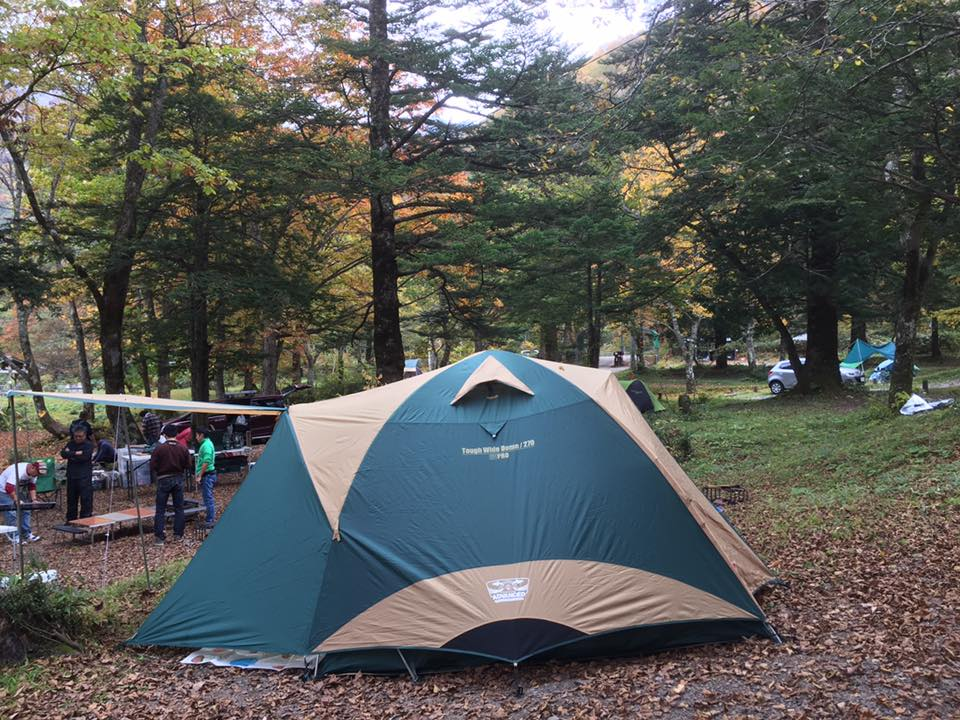

|  | 慶応3年1月5日（新暦2月9日）江戸牛込馬場下横町に生まれる。本名は夏目金之助。帝国大学文科大学（東京大学文学部）を卒業後、東京高等師範学校、松山中学、第五高等学校などの教師生活を経て、1900年イギリスに留学する。帰国後、第一高等学校で教鞭をとりながら、1905年処女作「吾輩は猫である」を発表。1906年「坊っちゃん」「草枕」を発表。1907年教職を辞し、朝日新聞社に入社。そして「虞美人草」「三四郎」などを発表するが、胃病に苦しむようになる。1916年12月9日、「明暗」の連載途中に胃潰瘍で永眠。享年50歳であった。文 |
| 慶応3年1月5日（新暦2月9日）江戸牛込馬場下横町に生まれる。本名は夏目金之助。帝国大学文科大学（東京大学文学部）を卒業後、東京高等師範学校、松山中学、第五高等学校などの教師生活を経て、1900年イギリスに留学する。帰国後、第一高等学校で教鞭をとりながら、1905年処女作「吾輩は猫である」を発表。1906年「坊っちゃん」「草枕」を発表。1907年教職を辞し、朝日新聞社に入社。そして「虞美人草」「三四郎」などを発表するが、胃病に苦しむようになる。1916年12月9日、「明暗」の連載途中に胃潰瘍で永眠。享年50歳であった。 |
| 慶応3年1月5日（新暦2月9日）江戸牛込馬場下横町に生まれる。本名は夏目金之助。帝国大学文科大学（東京大学文学部）を卒業後、東京高等師範学校、松山中学、第五高等学校などの教師生活を経て、1900年イギリスに留学する。帰国後、第一高等学校で教鞭をとりながら、1905年処女作「吾輩は猫である」を発表。1906年「坊っちゃん」「草枕」を発表。1907年教職を辞し、朝日新聞社に入社。そして「虞美人草」「三四郎」などを発表するが、胃病に苦しむようになる。1916年12月9日、「明暗」の連載途中に胃潰瘍で永眠。享年50歳であった。 |